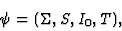
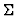
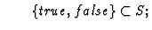
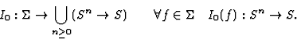
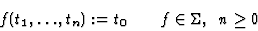
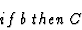
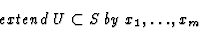
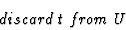
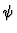
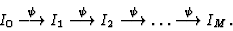

Evolving Algebras have been proposed by Yuri Gurevich in 1988 [9,10] as models for arbitrary computational processes. They are finite, dynamic algebras representing state transitions and describing operational semantics of discrete dynamical systems. They may be tailored to any desired level of abstraction. System states are represented here as static algebras.
An evolving algebra is a structure


is a signature (a set of operational (or functional) symbols with their arities);
I0 gives an initial interpretation of the signature's
operational symbols:

There are four kinds of transition rules (or updates):




Iterative application of evolving algebra

to sequentially arising states (static algebras) Ii, starting from the initial state I0, may give a terminated computation:
We plan to use the very flexible and powerful formalism of evolving algebras for description of our above-mentioned algorithms.